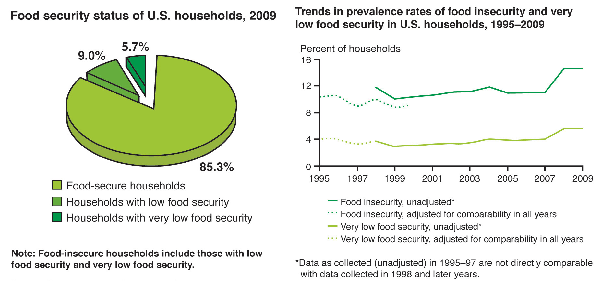
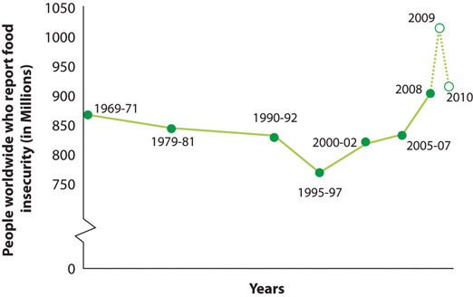

Figure 1.8 Food Security Status in the United States
Building a sustainable food system will help enforce measures to ensure that everyone on the planet has enough food to eat.
Source: Calculated by ERS using data from the December 2009 Current Population Survey Food Security Supplement.
The science of nutrition includes the study of how organisms obtain food from their environment. An ecosystemThe biological and physical environments and their interactions with the community of organisms that inhabit it, and also the interactions among the organisms. is defined as the biological and physical environments and their interactions with the community of organisms that inhabit those environments as well as the interactions among the organisms. Human nutrition and the health of the world’s ecosystem are interdependent, meaning that what we eat and where we get it from affects the world. In turn the health of the earth influences our health. The term sustainabilityDescribes the variety of approaches aimed at improving our way of life. Sustainability promotes the development of conditions under which people and nature can interact harmoniously. It is based upon the principle that everything needed for human survival depends upon the natural environment. is used to indicate the variety of approaches aimed at improving our way of life. Sustainability promotes the development of conditions under which people and nature can interact harmoniously. It is based upon the principle that everything needed for human survival depends upon the natural environment. A major theme of sustainability is to ensure that the resources needed for human and environmental health will continue to exist. A healthy ecosystem, one that is maintained over time, is harmonious and allows for social and economic fulfillment for present and future generations. Nutritious foods come from our ecosystem and to ensure its availability for generations to come, it must be produced and distributed in a sustainable way. The American Public Health Association (APHA) defines a sustainable food systemA system that can meet the needs of the current generation while providing food for generations to come without negatively impacting the environment. as “one that provides healthy food to meet current food needs while maintaining healthy ecosystems that can also provide food for generations to come with minimal negative impact to the environment.”American Public Health Association. “Towards a Healthy, Sustainable Food System.” Policy Statement Database. Policy no. 200712 (November 6, 2007). http://www.apha.org/advocacy/policy/policysearch/default.htm?id=1361 It also states that the attributes of a sustainable food system are:
A sustainable food system does not just include the food and those who consume the food, but also those that produce the food, like farmers and fishermen, and those who process, package, distribute, and regulate food. Unfortunately, we have a long way to go to build a sustainable food system.
The most prominent challenge to building a sustainable food system is to make food available and accessible to all. The Food and Agricultural Organization of the United Nations (FAO) states the right to food is a fundamental human right and its mission is to assist in building a food-secure world. Food securityA state in which all persons in a community’s population obtain a nutritionally adequate diet that is culturally acceptable throughout the year that is not dependent on emergency aid sources, but more so from local production. in America is defined as the “access by all people at all times to enough food for an active, healthy life.”US Department of Agriculture, Economic Research Service. “Food Security in the United States: Key Statistics and Graphics.” Last updated June 4, 2012. http://www.ers.usda.gov/Briefing/FoodSecurity/stats_graphs.htm#food_secure As of 2009, 14.9 percent of households, or 17.4 million people in the United States, had very low or low food security and these numbers have risen in recent years (Figure 1.9 "Food Insecurity: A Global Perspective").Food and Agricultural Organization of the United Nations. “Food Security: Concepts and Measurement.” In Corporate Document Repository, ID: 144369. 2003. http://www.fao.org/docrep/005/y4671e/y4671e06.htm
Food security is defined by the FAO as existing “when all people, at all times, have physical, social, and economic access to sufficient, safe, and nutritious food which meets their dietary needs and food preferences for an active and healthy life.”Food and Agriculture Organization of the United Nations. “How Does International Price Volatility Affect Domestic Economies and Food Security? In The State of Food Insecurity in the World. 2011. http://www.fao.org/publications/sofi/en/ The FAO estimates that 925 million worldwide were undernourished in 2010. Although there was a recent decline in overall food insecurity (attributable mostly to a decline in undernourished people in Asia), the number of undernourished people world-wide is still higher than it was in 1970, despite many national and international goals to reduce it.
Another challenge to building a sustainable food system is to supply high-quality nutritious food. The typical American diet does not adhere to dietary guidelines and recommendations, is unhealthy, and thus costs this country billions of dollars in healthcare. The average American diet contains too many processed foods with added sugars and saturated fats and not enough fruits, vegetables, and whole grains. Moreover, the average American takes in more kilocalories each day than ever before. This shift of the population toward unhealthy, high-calorie diets has fueled the obesity and diet-related disease crisis in this nation. Overall the cost of food for the average American household has declined since the 1970s; however, there has been a growth of “food deserts.” A food desertA location that does not provide access to affordable nutritious food. is a location that does not provide access to affordable, high-quality, nutritious food. One of the best examples of a “food desert” is in Detroit, Michigan. The lower socioeconomic status of the people who live in this city does not foster the building of grocery stores in the community. Therefore, the most accessible foods are the cheap, high-caloric ones sold in convenience stores. As a result, people who live in Detroit have some of the highest incidences of obesity, Type 2 diabetes, and cardiovascular disease in the country.
Figure 1.9 Food Insecurity: A Global Perspective
Source: Calculated by ERS based on Current Population Survey Food Security Supplement data.
A fourth challenge to building a sustainable food system is to change how we produce, process, and distribute food. Large agribusiness, complex industrial processing, and massive retail conglomerations distort the connection we have between the food on our plate and where it came from. More food is being produced in this nation than ever before, which might sound good at first. However, some factors that have contributed to higher food production include using genetically engineered plants, excessive use of herbicides and pesticides, and the selective promotion of only a few crops by the policy of crop-specific subsidies (money given to farmers by the federal government). The subsidies are given toward the support of only about eight crops, most notably corn and soybeans. This policy diminishes the variety of crops, decreases biodiversity among crops, and supports large agribusiness while disadvantaging small- and medium-sized farms. Additionally, the whole system of food production, processing, and distribution is lengthy, requiring a great deal of energy and fossil fuels, and promotes excessive use of chemicals to preserve foods during transportation and distribution. In fact, the current US food system uses approximately 22 percent of the energy in this country and is responsible for at least 20 percent of greenhouse gas emissions.Canning, P. et al.“Energy Use in the US Food System.” US Department of Agriculture, Economic Research Report, no. ERR-94 (March 2010). http://www.ers.usda.gov/Publications/ERR94/ERR94_ReportSummary.pdf
While these challenges are daunting there are many potential solutions that are gaining momentum in the United States. The APHA advocates expanding the infrastructure for locally grown food, improving access to healthy and local food for low-income Americans, providing education on food origin and production, building up the livelihoods of local farmers, and using sustainable farming methods. Detroit is currently a “food desert,” but there is a fantastic example of how to positively impact the growth of a sustainable food system within the city. It is called the Eastern Market and it is a six-block inner city market with over 250 vendors marketing local produce, meat, seafood, plants, fresh-cut flowers and much, much more. Unlike many urban farmers’ markets it sells foods that are of better quality and lower prices than grocery stores. Its forty-thousand visitors every Saturday demonstrate its success as a community-based way to foster good nutrition, good health, and social interaction.
Ten Steps You Can Take to Help Build a Sustainable Food System in Your Community
These are some great steps to build a more sustainable food system for you and your family, friends, neighborhood, community, city, state, nation, and world. For more solutions, watch Note 1.60 "Video 1.4". Throughout this book we will highlight multiple steps you can take toward building a sustainable food system in the Tools for Change sections, so stay tuned.
Sustainable Food Systems
(click to see video)This link brings you to an educational video on sustainable food systems.